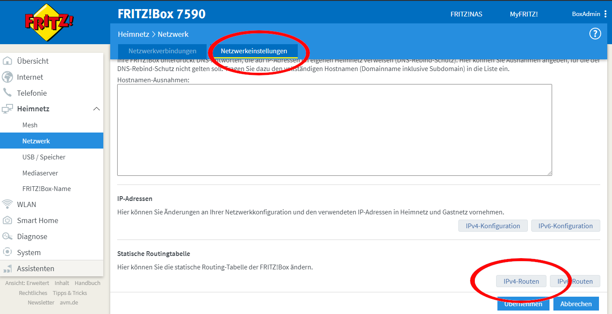
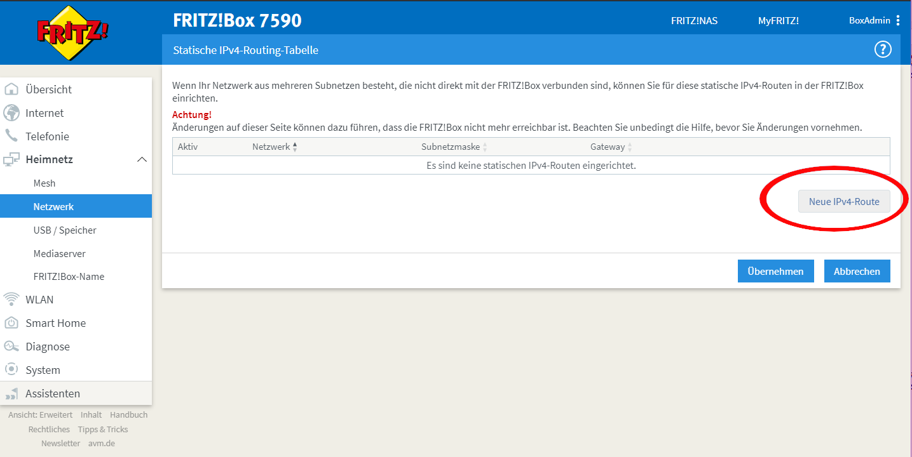
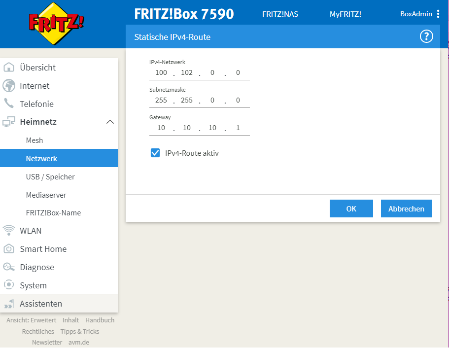

E-Rezept API-Dokumentation
Hier gibt die gematik eine Hilfestellung zur Konfiguration des lokalen Netzwerkes der Leistungserbringerumgebung.
Damit können Primärsysteme die Dienste der Telematikinfrastruktur über das Netzwerkrouting erreichen und
die Namensauflösung (DNS) der TI verwenden, um zu den TI-Adressen z.B. https://erp.zentral.erp.splitdns.ti-dienste.de die IP-Adressen der Fachdienst zu erfahren.
Primärsysteme erreichen den IDP und E-Rezept-Fachdienst über den Konnektor (IP-Adressbereich "offene Fachdienste"). In Netzwerkkonfigurationen, in denen der Konnektor nicht "in Reihe geschaltet" ist, sind die folgenden Punkte zu beachten. Den Primärsystemen (bzw. den Computern auf denen sie installiert sind - Host) muss über eine Netzwerkkonfiguration (z.B. über DHCP) ein DNS-Resolver und ein Default-Gateway für das Routing mitgeteilt werden.
| Das geschlossene Netz des digitalen Gesundheitswesens nutzt IP-Adressen, die ebenso außerhalb des geschlossenen Netzes und im Internet benutzt werden können. Es ist nicht auszuschließen, dass es dabei zu Konflikten in der Adressierung von einzelnen Diensten kommen kann. |
Konfiguration des Routings
Der Host-Computer des Primärsystems kennt ein Default-Gateway, an das ausgehende Datenpakete für das weitere Routing in Richtung Zieladresse geschickt werden. Für Ziele in der Telematikinfrastruktur müssen diese Datenpakete zum Konnektor geschickt werden, der je nach Netzwerkkonfiguration nicht das Default-Gateway ist.
Die Lösung besteht im Einrichten einer Weiterleitung für Zieladressen in der TI, sodass Datenpakete mit einer Zieladresse für bspw. offene Fachdienste vom Default-Gateway des Netzwerkes nicht ins Internet, sondern an den Konnektor weitergeleitet werden.
Ziele |
Adressbereiche |
offene Fachdienste |
|
aAdG und aAdG NetG-TI |
|
Die Routen für offene Fachdienste und aAdG + aAdG NetG-TI lassen sich zusammenfassen zu 100.102.0.0/15, um nur eine Route konfigurieren zu müssen. |
|
aAdG-NetG (Bestandsnetze) |
siehe lokale Repo-Datei Konnektor_Bestandsnetze.xml (Version 2.1.6 - April 2021), |
| Die Weiterleitung kann Segmentweise eingerichtet werden und muss nicht für jede Zieladresse einzeln erfolgen (übergreifende Routen). |
| Die Liste der erreichbaren aAdG (WANDA) wird regelmäßig aktualisiert, wenn im Rahmen der Bestätigung neuer Anbieter Adressbereiche des Anbieters hinzukommen. |
Je nach Art und Größe des lokal verwalteten Netzwerks der Leistungserbringerumgebung kommt im Gateway unterschiedliche Hard- und Software zum Einsatz. Einige lassen sich über die Kommandozeile admnistrieren, andere besitzen eine eigene API (z.B. Fritzbox, Speedport) und in bestimmten Fällen lässt sich die Konfiguration über ein UserInterface einrichten.
FritzBox-Konfiguration
Im Folgenden ist die Konfiguration einer Fritzbox über die grafische Benutzeroberfläche im Browser dargestellt.

Öffnen sie die Netzwerkeinstellungen und wählen sie für Statische Routingtabelle die IP-Version des lokalen Netzwerks
 Wählen Sie das Hinzufügen einer neuen statischen Route (im Bsp. für IPv4-Routen)
 Tragen sie bei Netzwerk den Adressbereich für z.B "Offene Fachdienste* wie oben angegeben ein.
Das Präfix /16 bedeutet eine Subnetz-Maske von 255.255.0.0,im Beispiel ist 10.10.10.1 die IP-Adresse des Konnektors im lokalen Netzwerk.
|
| Fügen Sie weitere Routen hinzu für die Bestandsnetze und aAdG. |
Zusätzlich stellt AVM standardisierte Schnittstellen (TR-064) bereit, um die Netzwerkkonfiguration ggfs. auch automatisiert durchführen zu können:
https://avm.de/fileadmin/user_upload/Global/Service/Schnittstellen/layer3forwardingSCPD.pdf
Konfiguration eines Linux-basierten Gateways
In größeren Netzwerken kommt mitunter eine gegenüber einer z.B. Fritzbox leistungsstärkere Hard- und Software in Form von Linux-Servern zum Einsatz. Diese lassen sich meist über die Kommandozeile administrieren.
Mit folgendem Shell-Kommando lassen sich die Routen für z.B. offene Fachdienste statisch festlegen:
$ ip route add 100.102.0.0/15 via 10.10.10.1 dev eth0
seien dabei 10.10.10.1 die Konnektoradresse im lokalen Netz und eth0 der verwendete Netzwerkinterface-Name
|
Für die Persistierung der statischen Routen ist darauf zu achten, welche Distribution verwendet wird und es sind die dazugehörigen Konfigurationen vorzunehmen. Andernfalls ist diese Netzwerkkonfiguration nach jedem Neustart zu tätigen. - Bspw. CentOS erlaubt das Erstellen von Skripten für die Netzwerkkonfiguration - Bspw. Ubuntu nutzt netplan, wo die Netzwerkkonfiguration in einer Netplan-Datei erfolgt |
Konfiguration der DNS-Namensauflösung
Über die Namensauflösung werden FQDNs (z.B. erp.zentral.erp.splitdns.ti-dienste.de für den E-Rezept-Fachdienst) in IP-Adressen für das Routing übersetzt. Werden bpw. für die Lastverteilung oder zur Ausfallsicherheit mehrere Serverknoten eingesetzt, liefert die Namensauflösung für einen FQDN mehrere IP-Adressen zurück. Die folgende Abbildung zeigt eine Übersicht der verwendeten Namensdienste.

In Netzwerken, in denen der Konnektor in Reihe geschaltet ist, kann dieser Ziel-Adressen in der TI über ein DNS-Forward vom Namensdienst der TI auflösen lassen. Für Zieladressen außerhalb der TI nutzt der Konnektor die Namensdienste im Internet.
In lokalen Netzwerken mit Parallelschaltung des Konnektors nutzen die Clients denjenigen DNS-Server, der ihnen im Rahmen der Netzwerkkonfiguration zugewiesen wird. Für das E-Rezept müssen die folgenden beiden FQDNs in IP-Adressen aufgelöst werden können:
erp.zentral.erp.splitdns.ti-dienste.de für den E-Rezept-Fachdienstidp.zentral.idp.splitdns.ti-dienste.de für den IdentityProvider (IDP)
|
Weitere Telematikadressen werden unter anderem unter der Domains *.telematik geführt.Die Adresse des Apothekenverzeichnisses apovzd.zentral.erp.splitdns.ti-dienste.de wird von den Primärsystemen nicht genutzt. |
Konnektor für Namensauflösung im lokalen Netz
Eine Variante der direkten Namensauflösung für Adressen der Telematikinfrastruktur ist, den Konnektor als primären DNS-Server über die Netzwerkkonfiguration durch den DHCP-Server in den Clients festzulegen. FQDNs der TI werden dann vom Konnektor durch den Namensdienst der TI aufgelöst, alle übrigen Adressen löst der Konnektor durch einen Namensdienst im Internet auf. Diese Funktionsweise stellt sich wie eine Reihenschaltung dar, nur dass der Konnektor nicht das Default-Gateway der Clients ist.
Anderer DNS-Resolver im lokalen Netz
Die Alternative dazu nutzt den Konnektor für die Namensauflösung nicht direkt. In Netzwerken mit eigenem Domain Controler lässt sich ein domain-spezifischer Forwarder konfigurieren, mit dem die Adressen splitdns.ti-dienste.de und die Adressen mit *.telematik über den Konnektor in IP-Adresssen der TI aufgelöst werden können.